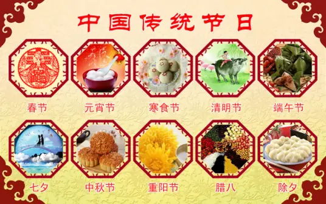
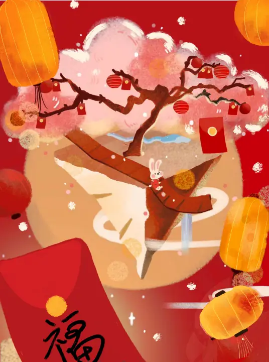
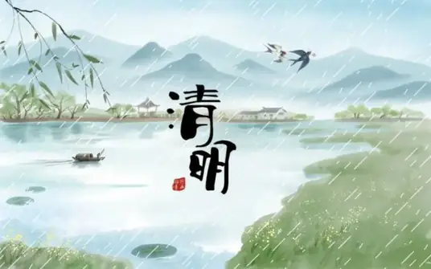
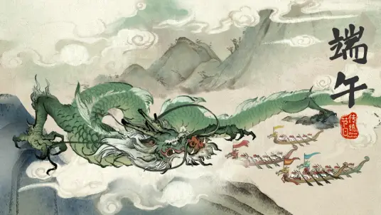
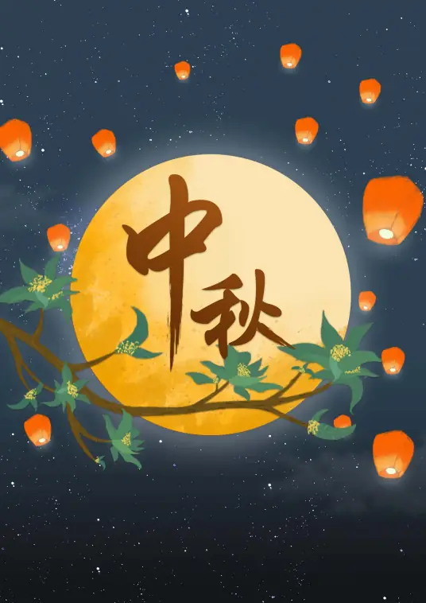

中国传统节日是中华民族悠久历史文化的重要组成部分，形式多样、内容丰富。从春节的爆竹迎新到中秋的月圆人圆，每一个节日都承载着深厚的文化记忆和民族情感。
传统节日民俗涵盖了祭祀、祈福、饮食、服饰、游艺等多个方面。这些民俗不仅是生活方式的体现，更是一个民族精神世界的窗口。春节、清明节、端午节、中秋节等传统节日已被列入国家级非物质文化遗产名录。

春节是中华民族最隆重的传统节日，由上古时代岁首祈岁祭祀演变而来。贴春联、放鞭炮、吃年夜饭、拜年、给压岁钱等习俗代代相传，寄托着人们对新一年的美好期盼。

清明节兼具自然与人文两大内涵，既是"二十四节气"之一，也是传统祭祖节日。扫墓祭祖与踏青郊游是清明节的两大礼俗主题，体现了中华民族敬祖念恩、亲近自然的精神追求。

端午节是集拜神祭祖、祈福辟邪、欢庆娱乐和饮食为一体的民俗大节。赛龙舟、吃粽子、挂艾草、佩香囊等习俗流传至今。端午节与春节、清明节、中秋节并称为中国四大传统节日。

中秋节源自天象崇拜，由上古时代秋夕祭月演变而来。赏月、吃月饼、玩花灯、饮桂花酒等民俗流传广泛。中秋节以月之圆兆人之团圆，寄托思念故乡、思念亲人之情。